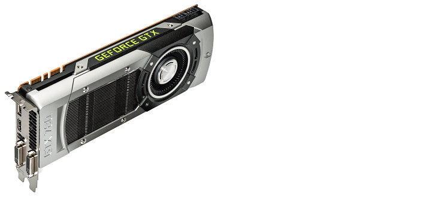

3. videokaart
Een videokaart zet digitale informatie om in een beeld op je beeldscherm. Veelvragende taken zijn games en professionele programma's zoal 3d modeling. Voor deze taken is het handig om een discrete videokaart aan te schaffen. Niet discrete videokaarten zitten geïntegreerd in de meeste CPU's en kunnen alleen lichte taken aan.
gaming:
Om een goede videokaart uit te zoeken voor gaming moet je jezelf eerst afvragen wat voor games je wilt gaan spelen en op welke resolutie. De meeste pc-gamers spelen op full HD (1920x1080). Als je op een hogere resolutie wilt gaan spelen heb je een monitor nodig die deze resolutie kan weergeven. Deze monitoren zijn op het moment relatief duur. Ook zal je een betere videokaart nodig hebben om op een hogere resolutie te kunnen spelen.
lichte games
Wil je alleen lichte games spelen zoals league of legends of minecraft dan heb je geen discrete videokaart nodig. De meeste geïntegreerde videokaarten kunnen dit aan. Check wel of je CPU een geïntegreerde videokaart heeft, en of deze de spellen aan kan die jij wil gaan spelen.
APU's
Als de geïntegreerde videokaart dit niet aan kan is het mogelijk om een APU te kopen. APU's zijn processors met geïntegreerde videokaarten. Het verschil tussen een APU en een CPU met geïntegreerde graphics is de kracht van de videokaart. De videokaarten in APU's zijn in tegenstelling tot normale geïntegreerde videokaarten gericht op zwaardere grafische processen. APU's kunnen lichte tot middelzware games aan.
Middelzware tot zware games
Als je van plan bent om grafisch zware games te gaan spelen is een discrete videokaart nodig. Vergelijk de benchmarks van verschillende videokaarten met elkaar, en bekijk welke videokaart de beste price/performance ratio heeft in de prijsklasse die jij zoekt. Let bij het bekijken van game benchmarks op de resolutie waarop de benchmark is gedaan. Ga jij in full HD spelen terwijl de benchmark in 4k is gedaan zullen de resultaten niet erg representatief zijn.
AMD en Nvidia zijn de grootste videokaart fabrikanten op de markt. Beide fabrikanten proberen bij hun nieuwe releases betere kaarten op de markt te brengen dan wat de tegenstander op het moment heeft. Dit is de reden waarom kaarten met de beste price/performance ratio niet op elk tijdstip van dezelfde fabrikant zijn. Houdt beide fabrikanten dus in de gaten.
3d modeling:
De meeste videokaarten zijn gemaakt voor gamen aangezien dit de grootste markt is. Er zijn ook videokaarten die speciaal voor 3d modeling zijn gemaakt. Dit zijn workstation kaarten. Over het algemeen zijn workstation kaarten voor de normale consument niet aan te raden omdat ze een stuk duurder zijn en weinig extra's bieden. Kijk hier voor meer informatie over dit onderwerp.